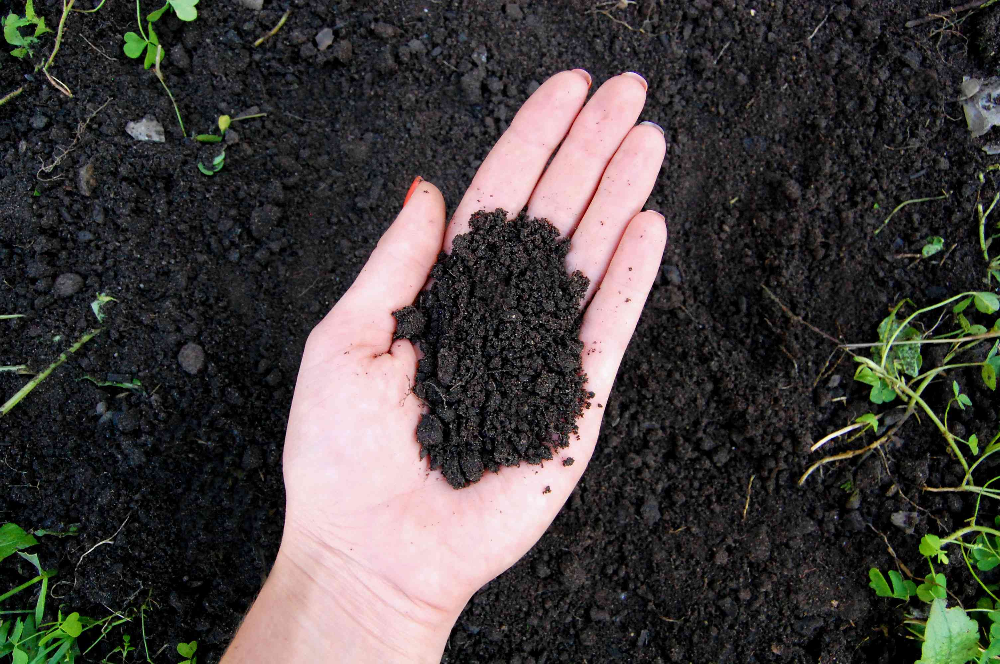
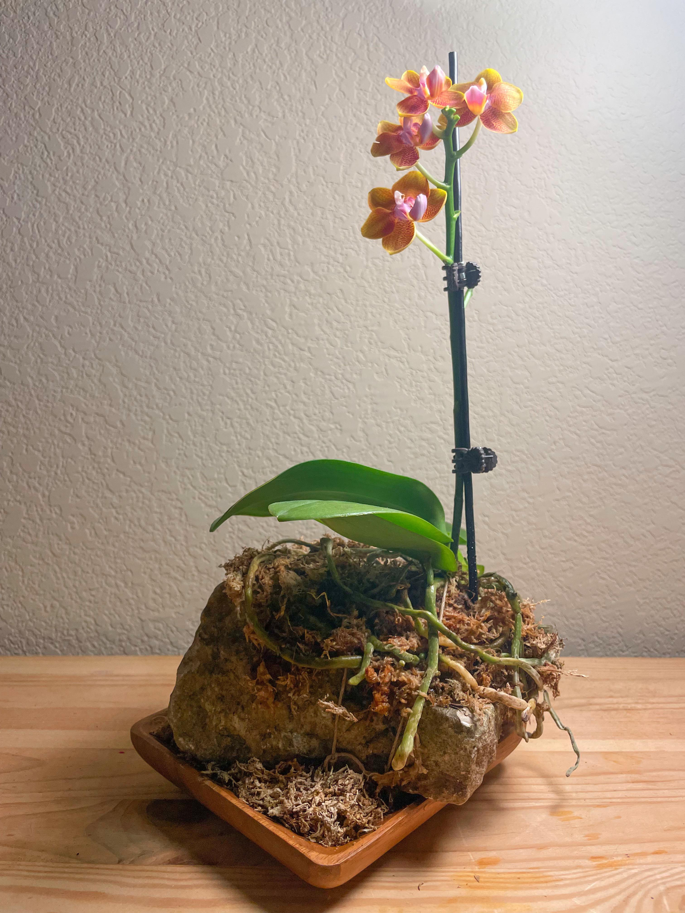
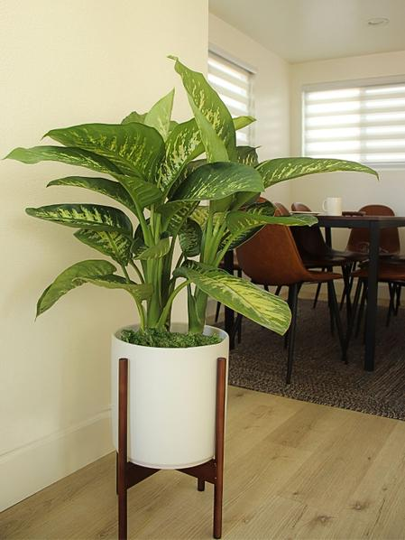
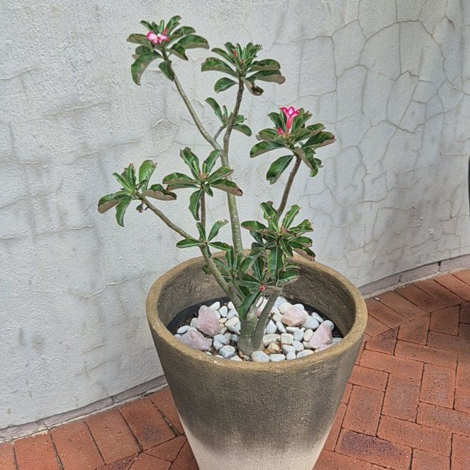
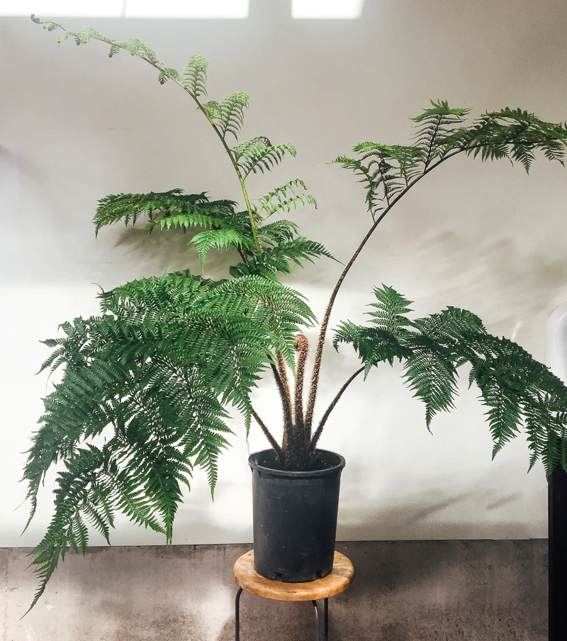
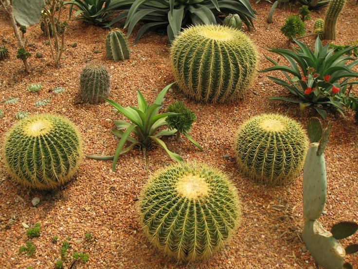
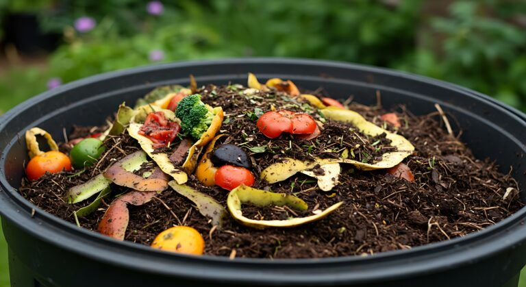
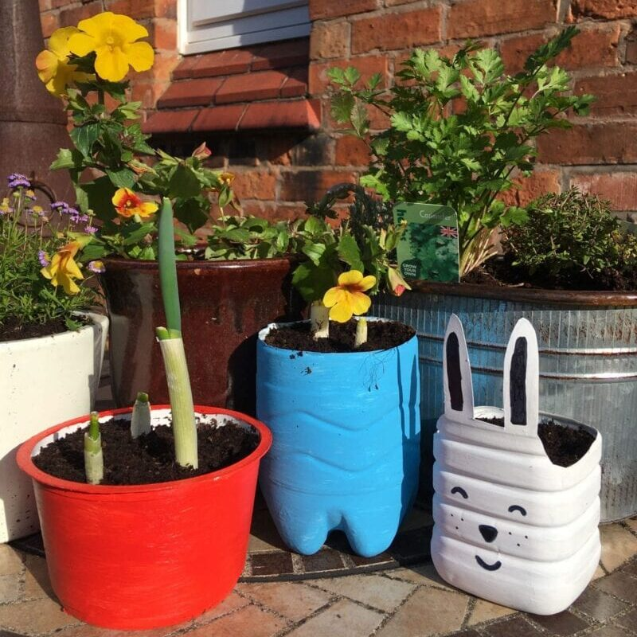

Understand the Best Conditions for Urban Plants
Healthy urban gardens depend on the right balance of soil quality, sunlight exposure, water management, and environmental conditions. This guide helps you understand how to create thriving green spaces in cities.
Soil, Sunlight, Water & Urban Growing Conditions
Urban gardening requires adapting to limited space, heat from concrete surfaces, and varying light exposure. Below are the key factors that determine plant health in cities.
🌱 Soil Requirements
Urban plants generally perform best in loose, well-draining soil with good organic content. Ideal soil is a mix of topsoil, compost,( and a light aeration material like sand, coco peat, or perlite to improve drainage) optionla but necessary when it comes to epiphytes or lithopyhtes. Healthy soil should contain organic matter because it increases nutrient availability and supports beneficial microorganisms such as bacteria and fungi that help plant roots absorb nutrients. Compacted soil is a common urban problem due to foot traffic and construction. It restricts root growth and reduces oxygen flow, which can slow plant development or cause root rot. Raised beds and containers are often used in cities to bypass poor ground soil conditions. Maintaining a slightly acidic to neutral pH (around 6.0-7.0) is optimal for most garden plants.

The Ideal Foundation: Loam Soil For the vast majority of garden vegetables, flowers, and fruit trees, loam is considered the gold standard of substrates due to its precise equilibrium of 40% sand, 40% silt, and 20% clay. This specific composition creates a "Goldilocks" environment that addresses the three primary needs of a root system simultaneously: sand particles create large macro-pores for essential aeration, silt acts like a sponge to retain consistent moisture, and negatively charged clay particles hold onto vital minerals like potassium and calcium. Because loam is naturally friable, it crumbles easily in the hand, providing a medium that is stable enough to anchor large plants yet loose enough for delicate feeder roots to navigate without the impenetrable resistance of heavy clay or the structural instability of pure sand.

The Aerial Specialists: Epiphytes and Lithophytes In stark contrast, specialized plants such as ferns, airplants, and orchids have evolved as epiphytes or lithophytes, living entirely off the ground on trees or rocks where their roots are exposed to constant airflow and fast-draining rainfall. Placing these specialists into standard loam or potting soil is often fatal because their roots are adapted for high-oxygen environments; the fine particles of loam fill the gaps around the roots, trapping excess moisture and cutting off vital gas exchange. This lack of oxygen leads to rapid root suffocation and fungal decay, making it essential to use lighter, porous substrates like bark, coco chips, lava rocks, or sphagnum moss. These materials mimic the craggy, airy surfaces of their native habitats, ensuring the roots remain hydrated without being waterlogged.
☀️ Sunlight Needs
Sunlight is one of the most important factors in plant growth because it drives photosynthesis. Most food crops and flowering plants require at least 6 hours of direct sunlight per day (full sun). However, many ornamental and leafy plants especially ferns and epiphytes can tolerate or prefer partial shade (3-6 hours of light). In dense urban areas, sunlight is often limited due to tall buildings, balconies, and shaded streets. This makes understanding light direction important south-facing and west-facing spaces usually receive stronger sunlight. Insufficient light can lead to weak stems, slow growth, and reduced flowering or fruiting. Some plants adapt by developing larger leaves to capture more light in shaded environments.

The Understory Dweller: Dieffenbachia The Dieffenbachia, often referred to as "Dumb Cane," is a tropical native that evolved beneath the dense, multi-layered canopy of Central and South American rainforests. Because it is naturally shielded by towering trees, it has adapted to thrive in bright, indirect light. Direct exposure to the sun harsh UV rays can quickly lead to scorched leaves, manifesting as unsightly brown patches or a bleached, "washed-out" appearance. In a home setting, it prefers the soft, filtered glow of a north-facing window or a spot several feet away from a sunny pane where the light is diffused.

The Sun-Seeker: Desert Rose Conversely, the Desert Rose is a succulent shrub native to the arid regions of sub-Saharan Africa and the Arabian Peninsula, where shade is a luxury and the sun is relentless. This plant is a true "sun worshipper," requiring full, direct sunlight ideally six to eight hours a day to fuel its metabolic processes and produce its signature trumpet-shaped blooms. Its thick, bulbous trunk (caudex) is designed to store water, allowing it to withstand the intense heat that would wither most other houseplants. Without sufficient direct light, a Desert Rose will become "leggy," stretching its stems toward the nearest light source, and will often fail to flower entirely.
💧 Watering Needs
Proper watering depends on plant species, climate, soil type, and container size. Most urban plants prefer deep but infrequent watering, which encourages roots to grow deeper and become more drought-resistant. Overwatering is one of the most common causes of plant failure in cities because it leads to oxygen loss in the root zone and encourages fungal diseases like root rot. A general guideline is to water when the top 2-3 cm of soil feels dry. Early morning watering is ideal because it reduces evaporation loss and allows plants to absorb moisture before daytime heat increases. In hot climates, container plants may require more frequent watering due to faster soil drying.

The Thirsty Giant: Tree Fern The Tree Fern (such as the Dicksonia or Cyathea species) is a living relic of ancient, humid forests. Because they lack the protective bark of modern trees and possess a "trunk" made of interconnected aerial roots, they are extremely susceptible to drying out. Unlike most plants, tree ferns need their trunks kept moist, not just their soil. In an urban setting, they require consistent, frequent watering to mimic the damp, misty environment of a cloud forest. If the soil or the fibrous trunk dries out completely, the delicate fronds will quickly brown and curl, often leading to a rapid decline of the plant.

The Efficient Reservoir: Cactus In sharp contrast, the Cactus is an engineering marvel of water conservation. Evolved for life in arid environments where rain may not fall for months, cacti have traded leaves for spines to minimize transpiration. Their thick, fleshy stems serve as water reservoirs, expanding to soak up moisture during rare rain events and shrinking as they slowly consume those reserves. For a cactus, the "deep but infrequent" watering rule is vital; the soil must be allowed to dry out completely between waterings. Providing constant moisture to a cactus is often a death sentence, as their root systems are highly prone to rot when deprived of oxygen.
🏙️ Urban Environmental Stress
Plants in cities face several unique stress factors including heat island effect, air pollution, limited root space, and soil contamination. Concrete and asphalt absorb and radiate heat, making urban temperatures several degrees higher than surrounding rural areas. This increases water loss through transpiration and can stress plants during hot seasons. Air pollutants such as dust, vehicle emissions, and particulate matter can block leaf pores (stomata), reducing gas exchange and slowing photosynthesis. Additionally, restricted rooting space in sidewalks and planters limits nutrient and water access. Choosing resilient plant species and improving soil quality are key strategies for successful urban greening.

Dust depositing on leaves highlight on of the visible environmental stresses a plant or tree will face , different species of different tolerances
♻️ Composting & Soil Enrichment
Composting is the controlled decomposition of organic waste such as food scraps, leaves, and plant trimmings into nutrient-rich humus. It is one of the most effective natural fertilizers because it improves soil structure, moisture retention, and microbial activity. Compost also slowly releases nutrients like nitrogen, phosphorus, and potassium, which are essential for plant growth. Unlike chemical fertilizers, it reduces the risk of nutrient leaching and soil degradation when used properly. In urban gardens, composting helps reduce household waste while improving long-term soil fertility.

🪴 Container Gardening
Container gardening is widely used in urban environments where ground soil is unavailable or unsuitable. It allows full control over soil quality, drainage, and placement. However, containers dry out faster than ground soil, so they require more consistent monitoring of water and nutrients. Successful container gardening depends on using pots with drainage holes, high-quality potting mix (not garden soil alone), and selecting plants that match container size. Root-bound conditions where roots grow in circles due to limited space can restrict growth, so periodic repotting is necessary for long-term plant health.
